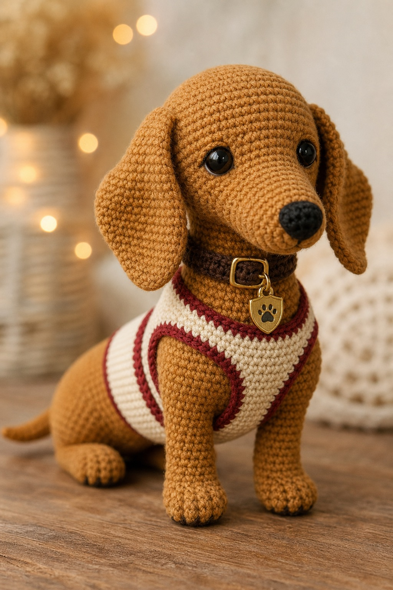

Monaco Pup
A closer Crafties-style rewrite for the golden racing dachshund. This version now follows the card construction Nath spotted: the main pup is worked continuously from the muzzle, through the head and long body, and out to the little tail, so the pattern and picture tell the same story.
Featured F1 Collection pattern
What we are keeping
The card reads as one smooth little dachshund shape from nose to tail. This rewrite keeps that feeling: no separate head sewn onto a separate body, and the tail is formed as part of the rear shaping. The only add-ons are the practical bits that naturally sit on top — ears, legs, harness, collar, and tiny details.
Materials
Abbreviations
Before you start
Legs — joined-on style
Ears and small details
Main pup — muzzle to tail
Face shaping
Little harness
Assembly
Beginner help
Pattern note
This rewrite is meant to make the card and the pattern match: the main dog is no longer written as a separate head and body. It is a continuous muzzle-to-tail shape with add-on details only where they make crochet sense.
The stitch counts on this page were tightened into a more believable desk-tested draft. I am not claiming a physical yarn sample was completed here, just that the pattern now matches the one-piece muzzle-to-tail construction Nath wanted.
{kind=link}